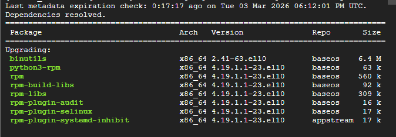
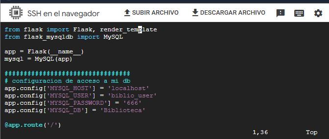
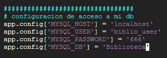
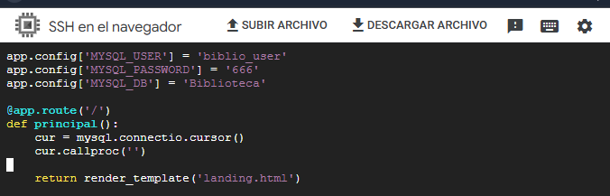

🎯 Objetivo de la actividad
Preparar la maquina virtual para conectar aplicaciones Flask con MariaDB, instalando dependencias de desarrollo
como python-devel, gcc y el grupo Development Tools. Tambien se aplico
configuracion de credenciales en Flask y buenas practicas para cerrar conexiones y evitar saturacion de MariaDB.
📦 Creacion de App04 desde App03
Se creo una nueva version del proyecto para continuar desarrollo sin alterar una app ya estable.
cp -fR App03 App04
cp copia archivos/directorios, -f fuerza la sobrescritura y -R copia de forma recursiva.
⚙️ Instalacion de python-devel y compiladores
Para soportar paquetes que compilan extensiones en C, se instalaron componentes de desarrollo de Python y herramientas del sistema.
sudo dnf install python-devel -y
sudo dnf install gcc* -y
sudo dnf groupinstall "Development Tools" -y.png)
Figura 1: Instalacion de python-devel y dependencias relacionadas.

Figura 2: Proceso de instalacion/actualizacion de herramientas de compilacion.
🔐 Configuracion de acceso a MariaDB en Flask
Se agrego la libreria flask_mysqldb, se inicializo MySQL(app) y se definieron
las credenciales de acceso (host, usuario, password y base de datos).
from flask import Flask, render_template
from flask_mysqldb import MySQL
app = Flask(__name__)
mysql = MySQL(app)
app.config['MYSQL_HOST'] = 'localhost'
app.config['MYSQL_USER'] = 'biblio_user'
app.config['MYSQL_PASSWORD'] = '666'
app.config['MYSQL_DB'] = 'Biblioteca'
Figura 3: Integracion de flask_mysqldb y configuracion inicial en app.py.

Figura 4: Definicion de parametros de conexion para MariaDB.
🧾 Cursor y cierre de conexiones
Se creo un cursor para ejecutar consultas SQL. Tambien se reforzo la importancia de cerrar conexiones luego de usarlas para evitar conexiones durmientes y alcanzar el limite maximo del servidor.
@app.route('/')
def principal():
cur = mysql.connection.cursor()
cur.callproc()
cur.close()
mysql.connection.close()
return render_template('landing.html')
Figura 5: Uso de cursor para ejecutar operaciones sobre MariaDB.
📘 Aprendizajes
Entorno de desarrollo listo
Se preparo la VM para compilar e instalar paquetes Python que requieren componentes nativos.
Conexion Flask + MariaDB
Se aplico configuracion de credenciales y estructura base para interactuar con base de datos desde Flask.
Buenas practicas de recursos
Cerrar cursores y conexiones evita saturacion de MariaDB y mejora estabilidad de la aplicacion.